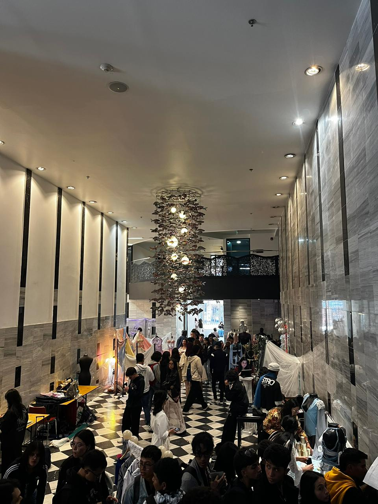
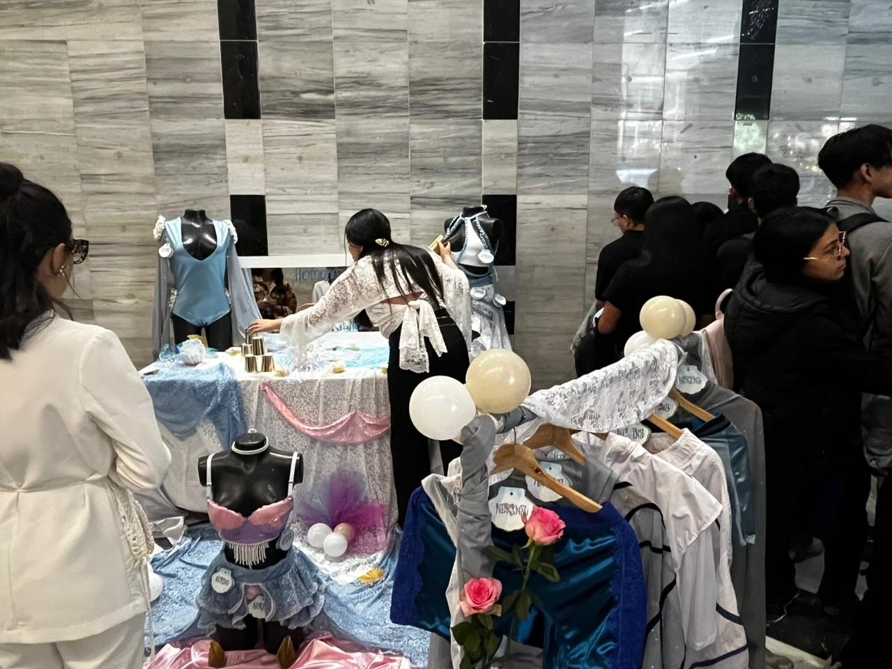
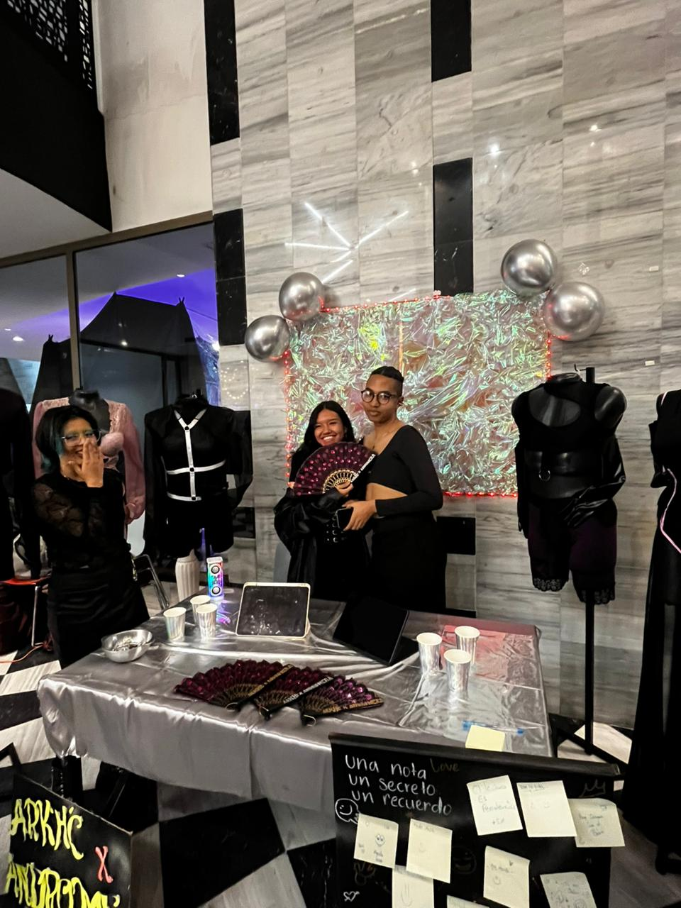
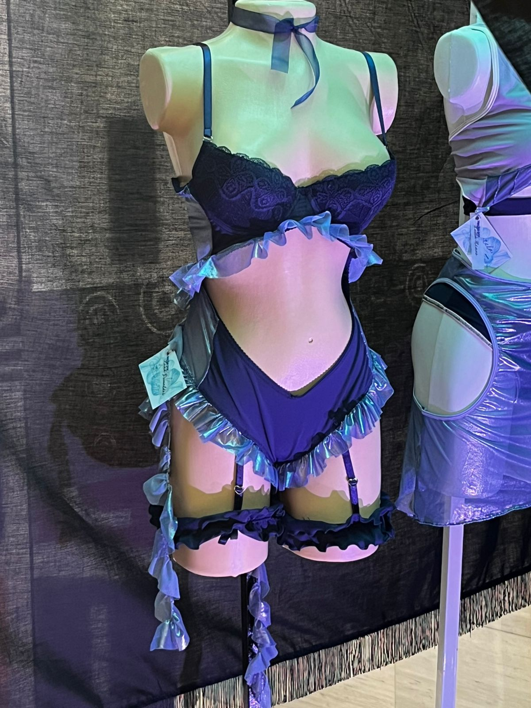

Evento Moda ECCI
Una experiencia académica sobre el impacto del color en el diseño, la moda, la comunicación visual y la experiencia de usuario.
Explorar experienciaModa ECCI Event
An academic experience about the impact of color on design, fashion, visual communication and user experience.
Explore experiencePresentar de forma organizada la experiencia académica Moda ECCI, relacionando la conferencia de Sara Viloria con el diseño visual, la teoría del color, la sostenibilidad y el desarrollo FrontEnd.
To present the Moda ECCI academic experience in an organized way, connecting Sara Viloria's conference with visual design, color theory, sustainability and FrontEnd development.
La participación en Moda ECCI permitió comprender cómo el color influye en la forma en que las personas perciben un producto, una marca o una interfaz digital.
La conferencia fortaleció conceptos relacionados con diseño visual, experiencia de usuario, identidad gráfica, semiótica del color y comunicación aplicada a la industria creativa.
Participating in Moda ECCI made it possible to understand how color influences the way people perceive a product, a brand or a digital interface.
The conference strengthened concepts related to visual design, user experience, graphic identity, color semiotics and communication applied to the creative industry.
Conferencia enfocada en la teoría del color, la percepción visual, la comunicación gráfica y la aplicación del color en experiencias creativas.
Conference focused on color theory, visual perception, graphic communication and the application of color in creative experiences.
Sara Viloria es artista visual, escritora, poeta, conferencista y colorista certificada por Pantone Institute. Su trabajo integra arte, educación, comunicación visual y teoría del color para explicar cómo los colores influyen en la percepción, las emociones y la creación de experiencias visuales.
Sara Viloria is a visual artist, writer, poet, speaker and colorist certified by Pantone Institute. Her work integrates art, education, visual communication and color theory to explain how colors influence perception, emotions and the creation of visual experiences.
Estudia cómo los colores se forman, se combinan y generan sensaciones visuales.
It studies how colors are formed, combined and how they create visual sensations.
Analiza los significados culturales, emocionales y comunicativos de los colores.
It analyzes the cultural, emotional and communicative meanings of colors.
Aplica el color para mejorar productos, marcas, interfaces y experiencias.
It applies color to improve products, brands, interfaces and experiences.
Registro fotográfico de la conferencia sobre color, percepción visual, arte y diseño.
Photo record of the conference about color, visual perception, art and design.




| English | Español | Definición |
|---|---|---|
| Color Theory | Teoría del color | Estudio de cómo los colores se combinan y generan percepción visual. |
| Pantone | Pantone | Sistema estandarizado de identificación del color. |
| Visual Design | Diseño visual | Uso de elementos gráficos para comunicar un mensaje. |
| User Experience | Experiencia de usuario | Percepción del usuario al interactuar con un producto digital. |
| Interface | Interfaz | Medio visual por el cual una persona interactúa con un sistema. |
| Color Palette | Paleta de color | Conjunto de colores seleccionados para una composición. |
| Contrast | Contraste | Diferencia visual entre colores, formas o elementos. |
| Sustainability | Sostenibilidad | Uso responsable de recursos para reducir el impacto ambiental. |
| Circular Economy | Economía circular | Modelo que promueve reutilización, reciclaje y reducción de residuos. |
| Brand Identity | Identidad de marca | Elementos visuales que representan una marca. |
| Typography | Tipografía | Estilo y organización visual de las letras. |
| Accessibility | Accesibilidad | Diseño que permite el uso por diferentes tipos de usuarios. |
| Harmony | Armonía | Relación equilibrada entre colores y elementos visuales. |
| Perception | Percepción | Forma en que el cerebro interpreta la información visual. |
| Creativity | Creatividad | Capacidad de generar ideas nuevas y soluciones visuales. |
La tecnología aplicada al diseño y la moda debe orientarse hacia prácticas responsables. El uso adecuado del color, la selección de materiales, la reducción de residuos y la reutilización de recursos permiten crear experiencias visuales con menor impacto ambiental.
Technology applied to design and fashion must focus on responsible practices. Proper use of color, material selection, waste reduction and resource reuse make it possible to create visual experiences with lower environmental impact.